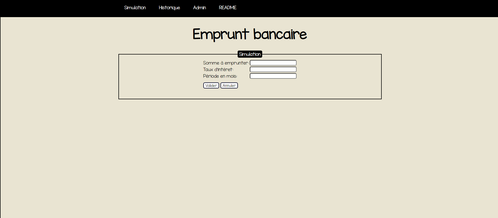
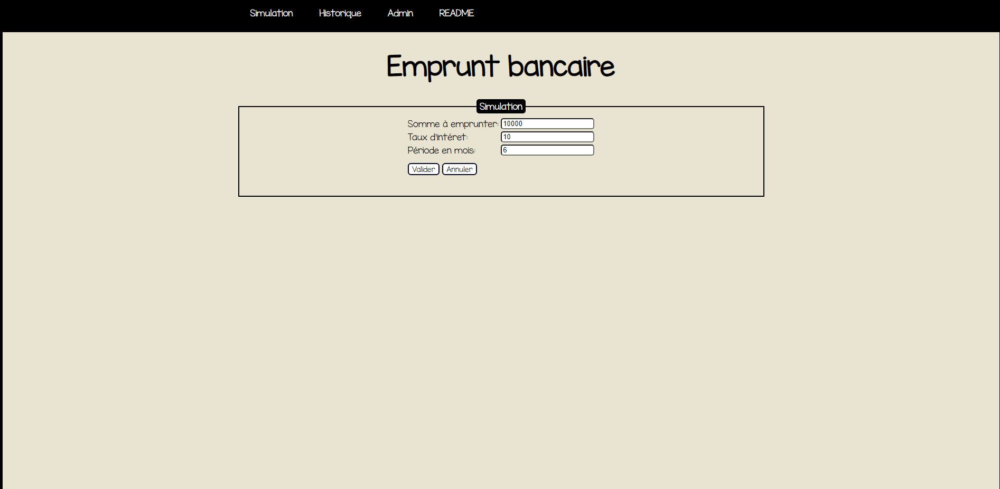
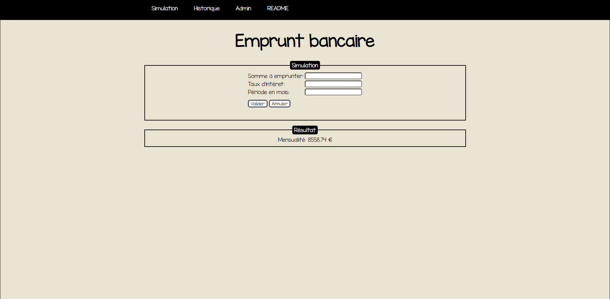

Description
Cette application web a pour objectif de permettre aux utilisateurs d'effectuer des simulations bancaires et de pouvoir consulter un historique dans lequel sont listées leurs simulations.
Objectif
Cette application web a pour objectif de permettre à tout utilisateur de démarrer la simulation d'un prêt bancaire et de pouvoir consulter un historique des simulations effectuées dans une archive.
De plus l'application web permet à un utilisateur particulier (admin) d'accéder au backend du site lui permettant notamment de consulter un journal d'activité où se trouvent les adresses IP des personnes ayant utilisé le site, les paramètres utilisés dans le formulaire de simulation dans le cas où l'utilisateur a validé le formulaire et avec la date de la simulation.
De plus, le login et le mot de passe de l'admin doivent être stocké dans un fichier avec le mot de passe crypté.
L'admin doit également pouvoir supprimer le journal d'activité ou bien l'archiver de manière à en créer un autre vide.
L'application n'utilise aucune base de données.
Installation
Pour pouvoir utilisé l'application, il n'y a aucune installation a effectué sur l'ordinateur de l'utilisateur.
L'utilisateur doit se rendre à l'adresse suivante : https://www.ProjetPHP.net/
Une fois sur le site l'utilisateur peut librement naviguer dans le menu en cliquant sur les différents onglets proposés en fonction des tâches qu'il souhaite effectuer.
Fonctionnement
mesFonctions
mesFonctions.php est le fichier comportant toutes les fonctions qui sont utilisées dans plusieurs autres fichiers.
On retrouve parmis ces fonctions :
- initMenu : initMenu se retrouve dans toutes les pages .php et .html du projet. Cette fonction permet tout simplement d'afficher le menu les différents boutons de navigation :
- Simulation
- historique
- admin
- Readme
- initStatut : initStatut permet de dire bonjour à l'utilisateur qui se connecte sur la page admin (ce sera toujours "Bonjour Admin" qui sera affiché car il s'agit du seul super utilisateur enregistrer.)
De plus, cette fonction permet d'afficher le bouton Déconnexion qui permet donc au super utilisateur de se déconnecter du mode admin. - supprcsv: la fonction qui permet la suppression de la ligne quand on depasse les 10 enregistrements dans l’historique
- nombrepositive : [...]
- archivage : archivage permet à l'admin d'archiver les données contenues dans l'historique des simulations. Le nom de l'archive prend la date du jour.
Simulation :
- simulation.php
- mesFonctions.php
L'utilisateur voulant réaliser une simulation devra rentrer différentes informations dans les zones de texte:
- somme à emprunter: la somme qu'il souhaite emprunter
- taux d'intérêt: le taux d'intérêt appliqué
- période en mois: la période de remboursement mensuelle
Page simulation avant utilisation.
Page simulation pendant la simulation.
Page simulation une fois la simulation effectué.
Les différentes données rentrées pour le calcul ainsi que le résultat de celui-ci sont stockés dans un fichier "fichier.csv".
Si 10 simulations ont déjà été effectuées, la plus ancienne simulation stockée est supprimée pour laisser place à la dernière simulation effectuée.
Historique :
- historique.php: la page qui affiche l'historique
- mesFonctions.php: la page de fonctions
L'historique permet de lire "fichier.csv" dans lequel sont stockées les 10 dernières simulations effectuées sur l'application.
Connexion administrateur :
- formulaire.php
- admin.php
- action-authentification.php
- action-deconnexion.php
- mesFonctions.php
Une fois sur celle-ci, il peut rentrer son login et son mot de passe qui sont préenregistrés dans "fichier_V0.csv".
Une fois le bouton validé cliqué, "action-authentification.php" est appellé ce qui va vérifier si le login et le mot de passe entré correspondent à celui enregisté dans le .csv.
Page admin si l'utilisateur n'est pas connecté.

Page admin si le login ne correspond pas au mot de passe ou si seulement le login est entré.

Page admin une fois la connexion effectuée.

Suppression de l'historique des simulations par l'admin :
action-deconnexion.php permet à un utilisateur spécial connecté en mod admin de le quitter. Quand celui-ci cliquera sur "déconnexion", sa session sera alors stoppée et il sera redirigé vers formulaire.php correspondant à la page de connexion au mod admin.
admin.php correspond à la page sur laquelle arrivera l'utilisateur spécial une fois qu'il aura entré son login et son mot de passe et que la connexion aura été acceptée.
Sur cette page, l'admin, voit un historique des différentes simulations. Il peut les effacer ou les archiver. S'il décide de les effacer, les données enregistrée seront également supprimées dans l'historique.
Auteurs de l'application
Cette application a été réalisé par :
- Krishnath Thevakumaran
- Mathias Engambe
- Antoine Le Corre
- Elies Hariate
- Tom Gely